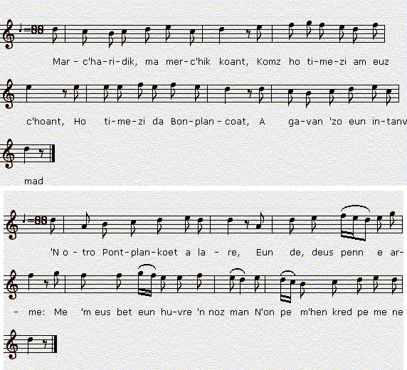
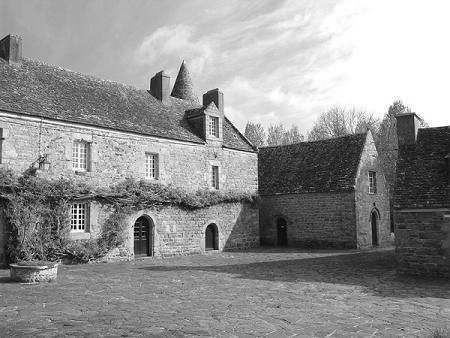

PONTPLENKOAD
Poplemcoat - Pontplencoat - Pont-Plenkot
Pontplaincoat - Pontpleincoët
Collecté par T. de La Villemarqué
Trois versions dont une recueillie à Plounéourtr1ez par un correspondant non identifié
|
Mélodies extraites de "Musiques Bretonnes" de Maurice Duhamel publiées en 1913, ces mélodies sont chantées:
Ces mélodies, très proches l'une de l'autre (rythme 5/4), sont mises en rapport par Duhamel avec deux versions du chant publiées par F-M. Luzel dans Gwerzioù I, p.383 et 387, sous le titre "Pontplancoat" en 1867 L'examen du premier carnet de Keransquer par M. Donatien Laurent a révélé que Théodore de La Villemarqué avait déjà noté cette belle complainte à trois reprises avant 1845, date de la parution de la deuxième édition du "Barzaz Breiz". M. Laurent complète ainsi la bibliographie de cette pièce (p. 251 des "Sources") : - Penguern t. 112, p. 114: Baron Penhoat; p. 124: Gwerz Comt Penhoat; p. 129: ar baron Pomplincoat. - Luzel, Ms. 17 (Bibliothèque municipale de Quimper): "An Aotroù Pomplancoat". |
ton 2 mélodies arrangées par Christian Souchon (c) 2014  Source: Le site de M. Pierre Quentel (voir 'Liens") |
Two melodies published in "Musiques Bretonnes" by Maurice Duhamel in 1913. They were sung respectively:
Both tunes are very much alike (5/4 beat pattern). They are connected by Duhamel with two individual versions of the lament printed by F-M. Luzel in "Gwerzioù", Book I, on pp.383 and 387, under the same title, "Pontplancoat", in 1867, namely: When examining the first Keransquer copybook, M. Donatien Laurent stated that Théodore de La Villemarqué had recorded three instances of this inspiring lament, even before he published the second edition of "Barzhaz Breizh", in 1845. M. Laurent gives additional bibliographic data concerning this piece (on page 251 of his "Sources"), as follows: - Penguern t. 112, p. 114: Baron Penhoat; p. 124: Gwerz Comt Penhoat; p. 129: ar baron Pomplincoat. - Luzel, Ms. 17 (Quimper Town Library): "An Aotroù Pomplancoat". |
1° VERSIONS 1 & 2 du Manuscrit de Keransquer (pages 55-57 & 99-102)
|
|
|
NOTES:
|
[1] Pomplencoat ou Penhoët: Luzel n'a pas réussi à identifier ce personnage. Il indique seulement qu'"il y a des maisons nobles du nom de Pontplancoet dans les communes de Plougoulm et de Plougasnou (Finistère)." La version De Penguern au N°3 ci-après, appelle le héros Baron de Penhoët et nous apprend qu'il eut en tout 5 femmes prénommées Marguerite, que la dernière était une Rohan dont l'oncle était évêque de Léon. Le baron lui-même participait aux Etats de Bretagne. Si l'on suit les indications notées sur le folio 66 du manuscrit, on peut supposer qu'il s'agit de Jean de Penhoat (ou Penhoët) qui fut amiral de Bretagne en 1401. C'était le fils de Guillaume de Penhoët, dit le "Tort-Boiteux" qui s'illustra lors de la défense de Rennes en 1356. Cette hypothèse est plausible du fait qu'il eut au moins deux femmes: D'autre part, on sait (site www.infobretagne.com) qu'une certaine Si "Pab a Rom" (version N°3, strophe 20) désigne le Pape de Rome par opposition à celui d'Avignon, comme le suggère De Penguern dans une note, l'histoire se serait effectivement déroulée entre 1376 et 1418. On a donc un faisceau de données qui mêlent deux Jean de Penhoët, trois Marguerite et le nom de Rohan. Il daterait cette histoire du tout-début du 15ème siècle, ce qui cadrerait bien avec l'état de la médecine obstétrique qu'elle reflète. [2] La césarienne: il ressort des versions n° 2 et n°3 que ce sont des considérations religieuses qui déterminent principalement le recours à cette opération: Il faut extraire l'enfant pour le baptiser. Le rôle des sages-femmes recrutées avec l'aval des autorités religieuses locales et selon des critères fixés par elles, était avant tout de baptiser le nouveau-né le plus rapidement possible. La survie de la mère n'est pas la préoccupation première. D'ailleurs il faut attendre 1880 et les progrès de l'asepsie et de l'anesthésie pour que cinq opérées sur six ne perdent plus la vie au cours de l'enfantement césarien. Il n'y a qu'au sommet de la hiérarchie sociale que l'on faisait appel à des sages-femmes de compétence reconnue. Seule la haute noblesse ou la très haute bourgeoisie recourait, comme ici, à un chirurgien-barbier accoucheur ou à un médecin. Ce praticien masculin ne touchait quasiment jamais les patients. Quand on l' appelait en cas de difficultés prévisibles, il se tenait dans une pièce attenante, ici la cuisine dont on ouvre exceptionnellement tout grand les portes. Il n'intervenait qu'à la demande de la sage-femme et, le plus souvent « à l’aveugle », sous une couverture tendue entre lui et l'accouchée! C'est dire l'importance des indications opératoires: la boule d'argent dans la bouche et le scalpel sur le côté droit dont toutes les versions de la présente complainte font état! Il semble normal que plusieurs témoins, sans doute des femmes de la famille et du voisinage, soient présents dans la chambre de l'accouchée, auxquels viennent se joindre, dans la présente complainte, sa sainte patronne et d'autres saintes spécialisées qui assistent, elles aussi, à l'opération en qualité de "conseillères techniques"! La première césarienne connue et réussie en occident sur une femme vivante, l'a été en l'an 1500: Jacques Nuter, châtreur de porcs à Siegerhausen, en Thurgovie (Suisse), avait accouché sa femme en utilisant la voie artificielle. On comprend, si les faits relatés par la gwerz remontent à l'an 1400, que la mort de la parturiente soit considérée comme inévitable et sa survie de trois jours après l'opération comme un miracle. Il est également curieux de constater que les accouchements difficiles de ses femmes successives sont imputées au mari, une malédiction qui serait conjurée par le franchissement d'un chiffre fatidique (quatre en l'occurrence: version N°3, strophe 5). [3] Bille d'or ou cuiller d'argent: toutes les versions de la complainte mentionnent cette pratique. Presque toutes parlent de bille d'argent ou d'or, sauf la version1 de Luzel qui parle de cuiller d'argent. On est tenté de mettre ladite pratique en rapport avec l'expression anglaise «Etre né avec une cuiller d'argent dans la bouche» qui signifie "être né dans une famille riche". Il ne s'agit pas de la bouche du nouveau-né, mais de celle de sa mère, à qui il était d'usage de placer un objet dans la bouche, peut-être pour prévenir un risque d'étouffement, ou pour détourner l'attention de la patiente, lors d'opérations très douloureuses. La cuiller de bois faisait l'affaire pour les pauvres; les riches avaient droit aux métaux précieux. L'argent était d'ailleurs, paraît-il, d'un usage médical courant pour certaines pathologies. De même une ancienne pratique consistait à demander à un soldat blessé de mordre une balle de fusil tandis qu'il subissait, sans anesthésie, une opération aussi douloureuse que la césarienne dont parle la gwerz, une amputation par exemple. Il s'agissait ici encore de focaliser ailleurs que sur sa douleur l'attention du patient (En anglais, "to bite the bullet" signifie "prendre son mal en patience"). [4] Le recours aux saints: toutes les versions de la gwerz font aussi état de ce testament par laquelle la mourante lègue une partie de ses biens réservés à des saints, sainte Marguerite, Saint Nicolas, sainte Hélène... en l'échange de bienfaits détaillés avec précision: soulagement de sa douleur, survie de trois jours... Cette contrepartie est parfois appelée "disro", "contre-don" et nombreuses sont les gwerzioù qui décrivent ce "marchandage". Dans la Peste d'Elliant par exemple, la vieille femme s'adresse ainsi à Dieu (dans l'adaptation par La Villemarqué, d'un modèle où il s'agit, en réalité, de Saint Roch, le saint lépreux) : "Pour mes fils, une sépulture! Je promets un cordon de cire / Cerclant trois fois Votre couvent,/ Et Votre église tout autant." Les comptes de fabriques et les exvotos qui remplissent les églises confirmeraient, s'il en était besoin, l'importance exceptionnelle de ces pratiques. [5] Le testament: Les humains ne sont pas oubliés dans le testament de la mourante, dont son mari lui rappelle, au préalable, les limites à ne pas dépasser: cinq mille écus dans la version n°1, ailleurs quatre cents écus. Cette pratique est détaillée dans de nombreuses complaintes, telles que celle de La Marquise de Guérand, celle du Comte Riodor, celle de Renée Le Glas et dans l'adaptation qu'en fit La Villemarqué, Azénor la Pâle. A n'en pas douter, ces descriptions de testaments faits au seuil de la mort, sous forme de déclaration orale à un confident, sont riches d'enseignements pour les historiens du droit. [6] Le petit page: ce personnage, invariablement, agile et rapide, auquel on confie des missions de messager intervient dans de nombreuses gwerzioù. Ici, il a la particularité de servir d'intermédiaire avec saint Yves qui prescrit le recours à la césarienne et le processus de l'opération. Dans la version N°3 le lieu-dit Koad-Eozen (Bois-Yves) où on l'envoie doit désigner une chapelle dédiée à ce saint. [7] Soursi, melkoni ha tourmañt: Tormentille, ancolie, souci. Chacune de ces herbes porte un nom peu engageant, tant en breton qu'en français (dont ces noms sont issus). D'autres gwerzioù, par exemple Pennherez Ar Wern, nous montrent les protagonistes cueillant des "louzoù fin" (des "herbes fines") à valeur symbolique dans un jardin. On peut y voir l'influence des "chansons de toile" françaises où une belle descend dans un jardin cueillir des fleurs dont le nombre est généralement fixé à trois et qui est interrompue par un rossignol qui lui donne des conseils relatifs à sa vie sentimentale. Une des plus belles est aussi l'une des plus anciennes et c'est un chant sans rossignol: "L'amour de moi" (XVème siècle). "L'amour de moi s'y est enclose Dedans un joli jardinet Où croît la rose et le muguet Et aussi fait la passerose..." [8] Biskoazh mamm e-neus o ganet: "Qu'aucune mère n'enfanta". Comment cette citation de Shakespeare (Macbeth, acte 4, scène 1) est-elle parvenue en Basse-Bretagne? Est-ce Shakespeare qui l'a trouvée dans des traditions communes à la Grande et la Petite Bretagne? Nul doute que La Villemarqué aurait opté pour la seconde explication s'il avait accueilli cette belle gwerz dans son Barzhaz! Peut-être aurait-il eu raison: On sait que Shakespeare s'appuyait, pour la plupart de ses pièces historiques, sur la seconde édition, celle de 1587, des Chroniques d'Angleterre, d'Ecosse et d'Irlande de Holinshed, dont la première édition date de 1577. C'est en particulier du volume V de ces chroniques qu'il tira son "Macbeth" composé en 1606 et publié en 1623. A la page 274 du volume V, on lit: "A n'en pas douter, il eût fait assassiner MacDuff, si une certaine sorcière, en qui il avait toute confiance, ne lui avait appris qu'il ne serait jamais tué de la main d'un homme né d'une femme, ni vaincu avant que la forêt de Birnam ne soit allée en marchant jusqu'au château de Dunsinane." Trois pages plus loin c'est épisode de la mort de Macbeth: "Mais Macduff [...] répondit [...]: "Tu dis vrai, Macbeth, pourtant ton insatiable cruauté touche à sa fin, car je suis celui dont t'ont parlé tes mages, moi que ma mère n'a point mis au monde, mais qui fut excisé de son ventre:" Sur ce, il s'avança sur lui et le transperça sur le champ." Le Macbeth historique (Mac Bethad mac Findlaích, né vers 1005 – mort le 15 Août 1057, à la bataille de Lumphanan), fut roi d'Ecosse de 1040 jusqu'à sa mort. Les Chroniques de Holinshed se fondent sur l' «Historia Gentis Scotorum» publiée en 1527 par Hector Boece, dont la source première fut l'«Orygynale Cronykil of Scotland»(Chronique originale d'Ecossse), compilée au début du 15ème siècle par un moine qui fut chanoine du prieuré de St. Andrew, Andrew Wyntoun. En 1395 il avait été nommé Prieur de St Servais, et c'est alors qu'il entreprit la chronique rimée qu'il acheva au plus tard, en 1424. C'est au chapitre 18 du tome 6 que figure la tentation de Macbeth par les trois sorcières, racontée comme un rève:
Toutefois, dans l'épisode final, Macbeth n'est pas tué par McDuff mais par un autre chevalier du nom de Lurdane:
L'"Original chronicle of Scotland" et la gwerz bretonne "Pontplencoat" désignent donc tous deux la même période: 1400-1425. Toutefois, alors que le Baron Penhoët déplore l'étrange particularité de ses cinq vaillants fils, il semble que la légende de Macbeth fasse l'éloge de la masculinité non souillée par un contact impur avec le féminin détestable (pouah!) Ces notes utilisent principalement les sources ci-après: Eva Guillorel: thèse de doctorat en ligne: "Plainte et Complainte"; "L'église de Saint-Thégonnec et ses annexes" de l'Abbé François Quiniou, 1909; Le site "www.infobretagne.com/combat_des_trente.html"; Le site "www.em-consulte.com/en/article/195924". Le site "www.shakespeare-navigators.com/macbeth/Holinshed/Holin277.htm". Le site "fr.wikipedia.org/wiki/Macbeth_d'%C3%89cosse" "English Writers" by Henry Morley (1822-1894) VI "From Chaucer to Canton"Cassel & Company 1890. |
[1] Pomplencoat vs. Penhoët: Luzel failed to identify this character. He only states that "noble families with the name of Pontplancoet live in the villages Plougoulm and Plougasnou (Finistère)." The De Penguern version #3 hereafter features a Baron Penhoët who had up to 5 wives with the Christian name of Margaret, the last of them was née Rohan, her uncle being bishop of Léon. As to the Baron he was a delegate to the Estates of Brittany. If we give credence to the hints jotted down on folio 66 of De Penguern MS, we may assume that it was Jean de Penhoat (or Penhoët) who was "Admiral of Brittany" in 1401. He was the son of Guillaume de Penhoët, alias "Tort-Boiteux" (the Lame Hunchback) who wan fame by leading the defence in Rennes town in 1356. This view is sustainable inasmuch as he had at least two wives: We know, furthermore, (site www.infobretagne.com) that a named If "Pab a Rom" (version #3, stanza 20) refers to the Pope of Rome as opposed to the Avignon Pope, as hinted by De Penguern in a note, the drama would really have taken place between 1376 and 1418. There is, consequently a network of facts mixing up two men named Jean de Penhoët, three women christened Marguerite and the noble family name Rohan. We are prompted to date these events to the very beginning of the 15th century, which would very well conform with the rudimentary obstetrical practice depicted in the song. [2] Caesarean delivery: We may infer from versions #2 and #3 that recourse to Caesarean delivery was primarily motivated by a religious imperative: a c-section was imposed on the mother to save the child and allow baptism. The task of the midwives recruited with the guarantee of the local clerics in accordance with their own standards, was above all to christen the newborn child as soon as possible. That the mother should survive was not their first concern. Besides, it was not until 1880 that improvements in asepsis and anaesthesia put an end to the fact that five in six women delivered by C-section did not survive the operation. Only the upper classes of society could afford midwives with acknowledged skills. Only high nobility and very high ranking bourgeoisie had recourse, like here, to obstetrician-barbers or to physicians. This male practitioner would practically never touch the patients. When he was called in case of foreseeable difficulties, he would stay in attendance in an adjoining room, here a pantry whose doors are exceptionally opened wide. He would interfere only at the midwife's request and, as a rule, «in a blind manner», i.e. with a blanket pulled tight to hide the parturient patient from his sight! Therefore operating instructions were capital: as are the silver ball put into the mouth and the razor positioned on the right hand flank in all versions of the lament at hand! It seemed to be usual that several witnesses, very likely women of the family and the neighbourhood, would attend in the new mother's bedroom. In the present lament they are joined by the mother's patron saint and other saints specializing in problem births, who also attend as "technical advisers"! The first documented successful operation on a living woman in the Western world was performed in 1500 by the sow-gelder Jacques Nuter, in Thurgovia (Switzerland), who delivered his own wife by means of a ceasarean section. What wonder, in a story allegedly dating back to the year 1400, if the patient's death should be considered inescapable and her surviving the operation during three days regarded as a miracle? It is also surprising to read that the difficult deliveries of his successive wives were ascribed to the husband, who would be relieved from this curse, once the fateful number of four deaths was exceeded, as stated in stanza 5 of version #3. [3] Gold ball vs. Silver spoon: all versions of the lament refer to this a priori superstitious custom. Nearly all of them mention a silver or gold ball, except the first Luzel's version which replaces the ball with a silver spoon. We are therefore tempted to connect this curious wont with the English saying «To be born with a silver spoon in one's mouth», meaning "to be born into a wealthy family of high social standard". The mouth in question is not that of the newborn child but that of its mother, into whose mouth they used to put some bulky thing, possibly to prevent suffocation, or to divert the patient's attention, when very painful operations were carried out. A wooden spoon sufficed for the poor, whereas the rich could afford precious metals. Besides, silver was often used, in ordinary medical practice, to cure certain pathologies. Similarily an old practice consisted in asking a wounded soldier to "bite the bullet" while undergoing, without anaesthetic, such painful operation as the Ceasarean cut in the gwerz, amputation for instance. Here again the purpose was diverting from the pain the patient's attention. [4] Having recourse to the Saints: all versions of the gwerz also mention the will by which the dying mother bequeaths part of her own fortune to holy brotherhoods, those of Saint Margaret, Saint Nicholas, Saint Helen ... in return for graces that are exactly specified: soothing of pains, three day's survival... This counterpart is sometimes called "disro", "gift-in-return" in "gwerzioù" recording this "bantering". In the lament Pest of Elliant for instance, the old woman calls out to God (in the adaptation by La Villemarqué of a traditional lament where the holy intercessor addressed is, in fact Saint Rochus) : "Bury my nine sons in the earth! I'll offer your church a wax cord. / That will three times Thy house surround, ,/ And three times Thy monastery ground.." The accounts of guilds and the many votive offerings in churches also demonstrate, if need be, the importance of this practice. [5] The testament: However, humans are not forgotten in the dying mother's will, whose husband, prior to any stipulation, sets limits that should not be trespassed: five thousand crowns in version #1, elsewhere four hundred crowns. This proceeding is explained in detail in many laments, like the Marchioness Guérand, the Count Riodor, the Renée Le Glas laments and the adaptation of the latter by La Villemarqué, The Pale Azénor. To be sure, these descriptions of wills and testaments entrusted at the point of death, as oral dying declarations, to trustworthy confidants, are a mine of information for legal history. [6] The little page: this invariably nimble and swift servant, will be entrusted with messenger's errands in many a "gwerz". In the present instance he acts as a middleman in a transaction with Saint Yves who prescribes the c-section and stipulates how to perform it. In version #3, the place name Koad-Eozen (Saint Yves' Wood) whither he is sent could refer to a chapel dedicated to this holy man. [7] Soursi, melkoni ha tourmañt: Marigold, columbine, cinquefoil. Each of these herbs has a dismal name in Breton and in French alike (French loanwords meaning: sorrow, melancholy, torment). Other "gwerzioù", for instance Pennherez Ar Wern, stage characters picking "louzoù fin" (fine "herbs") with symbolic import in a yard. We may suspect here the influence of some French "chansons de toile" (canvas songs) featuring a fair girl who goes down to her yard and picks flowers that are of three sorts, as a rule. A nightingale interfers and gives her advice as to how to manage her love life. One of the loveliest of these airs, which also is one of the oldest, involves no nightingale: "L'amour de moi" (15th century). "My love is locked up, as it were, Inside a yard, small and pretty. Rose and lily of the valley They thrive, as does hollyhock, there..." [8] Biskoazh mamm e-neus o ganet: "None [of them was] of woman born". How did this excerpt from Shakespeare's Macbeth, (Act 4, scene 1) find its way into a Lower-Brittany lament? Did Shakespeare find it in lore common to Greater and Lesser Britain? Without any doubt La Villemarqué would have chosen the second explanation, if he had included in his "Barzhaz" this beautiful lament! Maybe he would not have been wrong: We know that Shakespeare availed himself, for most of his historic plays, of the second 1587 edition of Holinshed's Chronicles of England, Scotland, and Ireland, first published in 1577. In particular he drew on volume V of this chronicle for his "Macbeth" which was written in 1606 and published in 1623. On page 274 of Volume V, we read (modernized spelling): "And surely hereupon had he put Macduff to death, but that a certain witch, whom he had in great trust, had told that he should never be slain with man born of any woman, nor vanquished till the wood of Birnam came to the castell of Dunsinane." We read three pages further (McBeth's death episode): "But Macduff [...] answered [...]: "It is true Macbeth, and now shall thine insatiable cruelty have an end, for I am even he that thy wizzards have told thee of, who was never born of my mother, but ripped out of her womb:" therewithall he stept unto him, and slew him in the place." The real Macbeth (Mac Bethad mac Findlaích, b. ca. 1005 – d. on 15 August 1057, at the battle of Lumphanan), was king of Scots from 1040 until he died. Holinshed's Chronicles are based on the «Historia Gentis Scotorum» published in 1527 by Hector Boece, whose ultimate source was the rhymed chronicle, «Orygynale Cronykil of Scotland», composed at the beginning of the 15th century by a canon regular of the priory of St. Andrew's, Andrew Wyntoun. In 1395 he had been appointed Prior of St. Serf's, when he began to rhyme his chronicle, which he finished, at the latest, in 1424. In the 18th chapter of the 6th book we have the temptation of Macbeth by the three witches, told as a dream:
However in the episode of his defeat, Macbeth is not slain by McDuff but by another knight named Lurdane:
Both the "Original chronicle of Scotland" and the Breton gwerz "Pontplencoat" point, consequently, to the same interval of time: 1400 - 1425. However, whereas Baron Penhoët deeply regrets his gallant five sons' specificity, the Macbeth tale apparently extols masculinity unpolluted by any obnoxious feminine contact (ugh!) These notes are based on: Eva Guillorel's on-line doctoral thesis "Plainte et Complainte"; "L'église de Saint-Thégonnec et ses annexes" by Abbé François Quiniou, 1909; The site "www.infobretagne.com/combat_des_trente.htm"; The site "www.em-consulte.com/en/article/195924". The site "www.shakespeare-navigators.com/macbeth/Holinshed/Holin277.htm". The site "fr.wikipedia.org/wiki/Macbeth_d'%C3%89cosse" "English Writers" by Henry Morley (1822-1894) VI "From Chaucer to Canton"Cassel & Company 1890. |
2° VERSION 3 du Manuscrit de Keransquer (pages 235-236, 241-242 )
|
|
|
3° BARON PENHOAT
Tome 91 des Manuscrit de Penguern, folios 66 à 71
|
|
|

Manoir de Pontplaincoat en Plougoulm (St Pol-de-Léon)